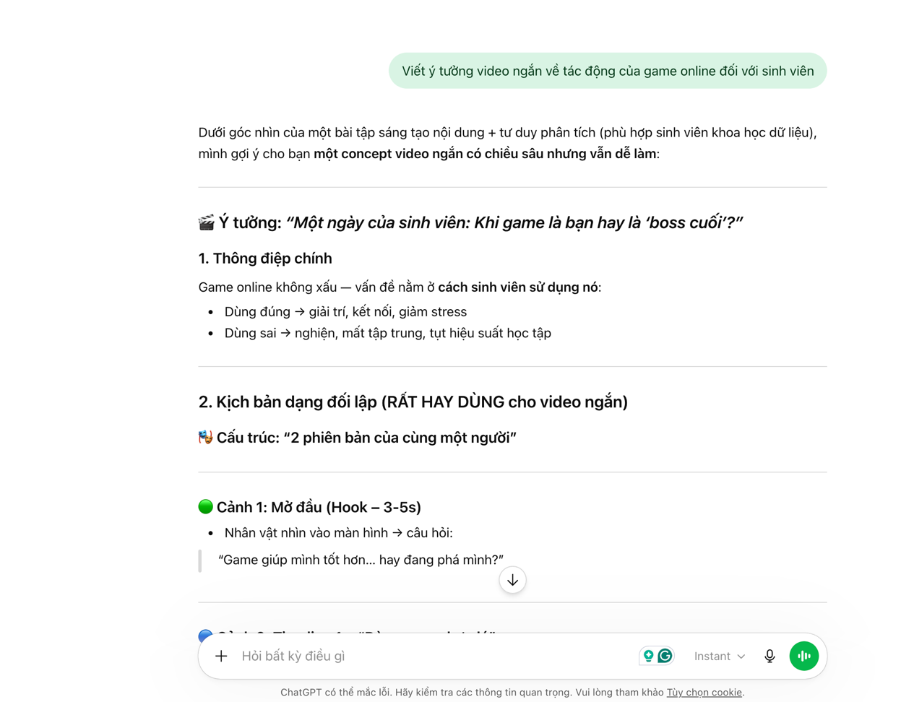
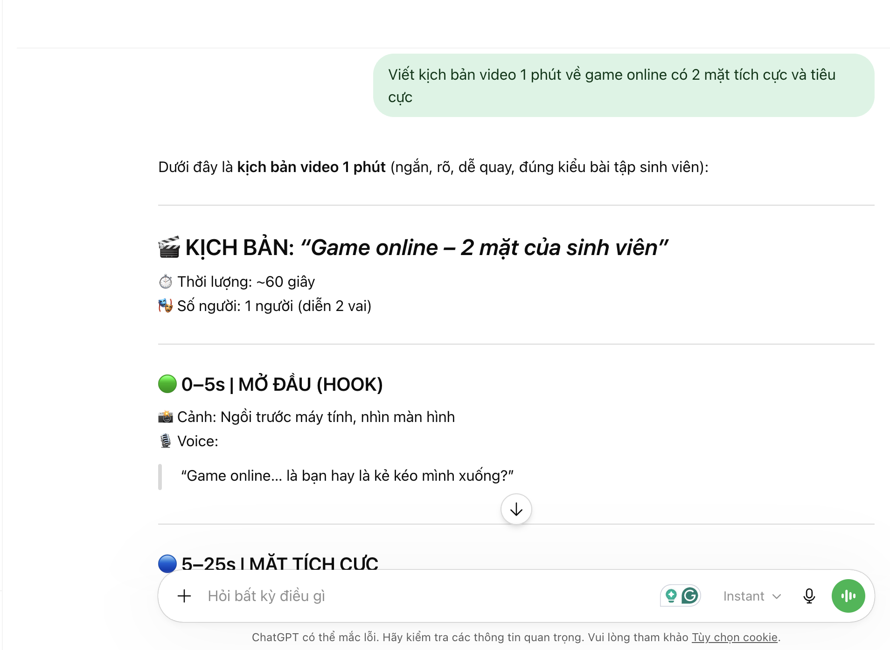
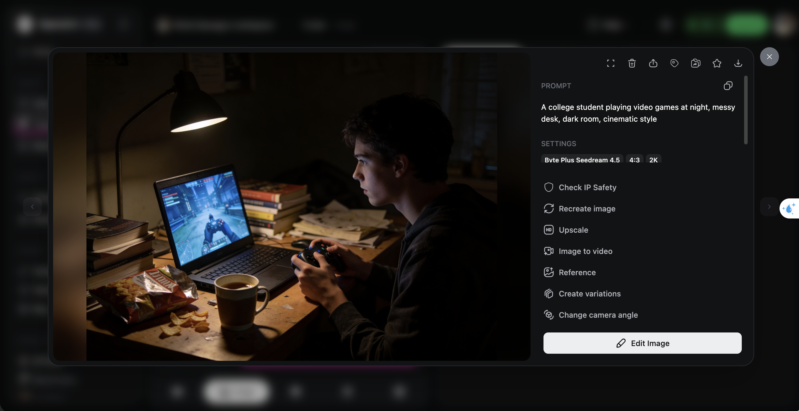
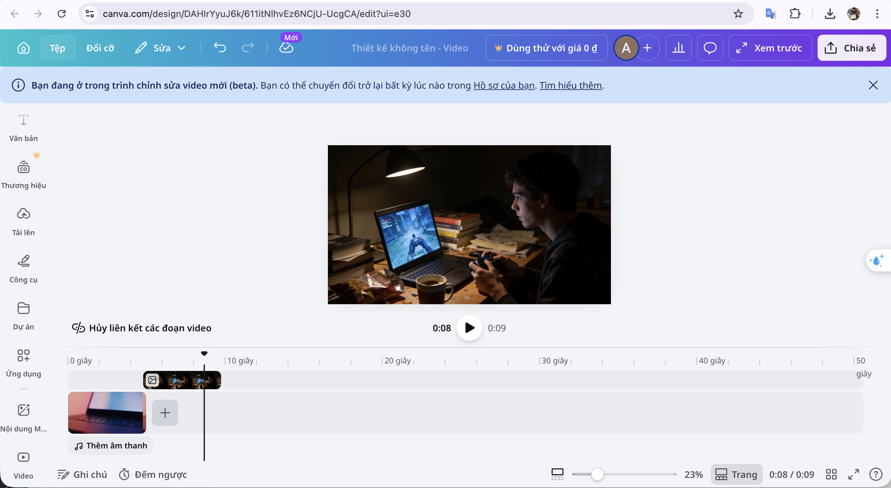

Bài 5: Sáng tạo nội dung số
BÁO CÁO SỬ DỤNG AI TRONG SÁNG TẠO NỘI DUNG SỐ
Chủ đề: Video ngắn về tác động của game online đến sinh viên
I. Giới thiệu dự án
Trong bài tập này, em lựa chọn thực hiện một video ngắn (1–2 phút) với chủ đề:<br>👉 “Game online – Giải trí hay cạm bẫy đối với sinh viên?”
Mục tiêu của video:
Phân tích 2 mặt của gaming (tích cực và tiêu cực)
Tạo nội dung dễ hiểu, gần gũi với sinh viên
Sử dụng AI để hỗ trợ toàn bộ quá trình sáng tạo
II. Các công cụ AI đã sử dụng
Trong quá trình thực hiện, em sử dụng 3 nhóm công cụ AI:
1. AI tạo văn bản
ChatGPT
Google Gemini
👉 Dùng để:
Viết kịch bản video
Gợi ý ý tưởng nội dung
Chỉnh sửa câu từ
2. AI tạo hình ảnh
DALL·E
👉 Dùng để:
Tạo hình minh họa game, sinh viên chơi game, nghiện game
3. AI hỗ trợ thiết kế
Canva
👉 Dùng để:
Thiết kế slide video
Ghép ảnh + text + hiệu ứng
III. Quá trình sử dụng AI (chi tiết)
1. Tạo ý tưởng nội dung
Prompt sử dụng với ChatGPT:
Viết ý tưởng video ngắn về tác động của game online đối với sinh viên
Kết quả:
AI đưa ra 3 hướng:
Gaming giúp giải trí
Gaming gây nghiện
Cân bằng giữa học và chơi
👉 Em chọn hướng thứ 3 vì mang tính thực tế nhất.

2. Viết kịch bản video
Prompt:
Viết kịch bản video 1 phút về game online có 2 mặt tích cực và tiêu cực
Kết quả (rút gọn):
Mở đầu: sinh viên chơi game
Giữa: lợi ích (giải trí, phản xạ nhanh)
Sau: tác hại (nghiện, học kém)
Kết: thông điệp cân bằng

👉 Chỉnh sửa cá nhân:
Thêm ví dụ thực tế: “deadline dí nhưng vẫn chơi”
Làm ngôn ngữ gần gũi hơn (giọng sinh viên)
3. So sánh với Google Gemini
Prompt giống ChatGPT
Nhận xét:
Gemini:
Viết formal hơn
Ít “đời thường”
ChatGPT:
Tự nhiên hơn
Phù hợp video TikTok
👉 Em chọn nội dung từ ChatGPT và chỉnh lại.
4. Tạo hình ảnh bằng DALL·E
Prompt:
A college student playing video games at night, messy desk, dark room, cinematic style
Kết quả:
Hình ảnh đẹp, đúng vibe “nghiện game”
👉 Chỉnh sửa:
Chọn ảnh phù hợp nhất
Dùng Canva thêm chữ:
“Chơi 1 chút thôi…”
“5 tiếng sau…”

5. Thiết kế video bằng Canva
Các bước:
Upload ảnh từ DALL·E
Thêm text
Thêm animation
Chèn nhạc nền
👉 Điểm sáng tạo cá nhân:
Chọn font gaming
Chỉnh màu neon
Thêm hiệu ứng glitch

IV. Sản phẩm cuối cùng
Sản phẩm là:
Video ngắn (~1 phút)
Nội dung gồm:
Hook (gây chú ý)
Nội dung chính
Thông điệp
👉 Thông điệp cuối:
“Game không xấu, cách bạn chơi mới quyết định tất cả.”
V. Phân tích vai trò của AI
1. Những phần AI làm tốt
Tạo ý tưởng nhanh
Viết nội dung có cấu trúc rõ ràng
Tạo hình ảnh đẹp, đúng yêu cầu
👉 Giúp tiết kiệm rất nhiều thời gian
2. Những hạn chế của AI
Nội dung còn chung chung
Thiếu trải nghiệm thực tế
Hình ảnh đôi khi chưa sát 100%
👉 Cần con người chỉnh sửa
3. AI thay đổi quy trình sáng tạo
Trước đây:
Tự nghĩ ý tưởng → mất thời gian
Hiện tại:
Dùng AI → có idea nhanh → chỉnh lại
👉 Quy trình mới:
AI → chọn lọc → chỉnh sửa → hoàn thiện
4. Vấn đề đạo đức
Một số vấn đề cần chú ý:
Không copy 100% nội dung AI
Phải chỉnh sửa và sáng tạo thêm
Tránh phụ thuộc hoàn toàn vào AI
👉 AI là công cụ, không phải người làm thay
VI. Kết luận
Qua bài tập này, em nhận thấy:
AI giúp tăng tốc sáng tạo rất mạnh
Nhưng vẫn cần tư duy cá nhân để tạo sự khác biệt
Người dùng AI hiệu quả là người biết:
Đặt prompt tốt
Chỉnh sửa kết quả
👉 Kết luận cá nhân:
“AI không thay thế người sáng tạo, nhưng sẽ thay thế người không biết dùng AI.”
VII. Tài liệu tham khảo
ChatGPT
Google Gemini
DALL·E
Canva